Setting up Anovos on Azure Databricks
Azure Databricks is a hosted version of Apache Spark on Microsoft Azure. It is a convenient way to handle big data workloads of Spark without having to set up and maintain your own cluster.
To learn more about Azure Databricks, have a look at the official documentation or the following introductory tutorials:
Currently, Anovos supports two ways of running workflows on Azure Databricks:
- Processing datasets stored directly on DBFS
- Processing datasets stored on Azure Blob Storage
Generally, we recommend the first option, as it requires slightly less configuration. However, if you're already storing your datasets on Azure Blob Storage, mounting the respective containers to DBFS allows you to directly process them with Anovos.
1. Anovos on Azure Databricks using DBFS
The following steps are required for running Anovos workloads on Azure Databricks that process datasets stored on DBFS.
Step 1.1: Installing Anovos on Azure Databricks
To make Anovos available on Azure Databricks, you need to provide access to the Anovos Python package.
The easiest way is to point Azure Databricks to the
current release of Anovos on the Python Package Index (PyPI).
(This is where pip install anovos goes to fetch Anovos when installing from the terminal.)
This has the advantage that you will get a well-tested and stable version of Anovos. We recommend this option.
If you choose this option then you can directly go to Step 2.
But if you need to make custom modifications to Anovos or need access to new features or bugfixes that have not been released yet, you can choose any of the options below. (We will configure Azure Databricks to retrieve the correct Anovos Python package as part of Step 4.)
Alternative: Manually uploading a wheel file
Instead of pointing Azure Databricks to the Python Package Index (PyPI), you can make Anovos available by downloading the respective wheel file from PyPI yourself and manually uploading it to Azure Databricks.
You'll find the link to the latest wheel file on
the "Download files" tab, it's the file with the extension .whl
(for example: anovos-1.0.1-py3-none-any.whl).
If you'd like to use an older version, you can navigate to the respective version in the
release history and access the "Download files" tab
from there.
Download the Anovos wheel file to your local machine and move on to Step 2.
Alternative: Use a development version of Anovos
If you would like to try the latest version of Anovos on Azure Databricks (or would like to make custom modifications to the library), you can also create a wheel file yourself.
First, clone the Anovos GitHub repository to your local machine:
💡 Using the --branch flag allows you to select a specific release of Anovos.
For example, adding --branch v1.0.1 will give you the state of the 1.0.1 release.
If you omit the flag, you will get the latest development version of Anovos, which might not
be fully functional or exhibit unexpected behavior.
After cloning, go to the anovos directory that was automatically created in the process
and execute the following command to clean and prepare the environment:
It is a good practice to always run this command prior to generating a wheel file or another kind of build artifact.
💡 To be able to create a wheel file, wheel, build, and setuptools need to be installed
in the current Python environment. You can do so by running pip install build wheel setuptools.
Then, to create the wheel file, run the following command directly inside the anovos folder:
Once the process is finished, the folder dist will contain the wheel file.
It will have the file extension *.whl and might carry the latest version in its name.
💡 The version in the file name will be that of the latest version of Anovos, even if you cloned the repository yourself and used the latest state of the code. This is due to the fact that the version is only updated right before new release is published. To avoid confusion, it's a good practice to rename the wheel file to a custom name.
Step 1.2: Prepare and copy the workflow configuration and data to DBFS
To run an Anovos workflow, both the data to be processed and the workflow configuration need to be stored on DBFS.
You can either use the UI or the CLI to copy files from your local machine to DBFS. For detailed instructions, see the respective subsections below.
In this tutorial, we will use the "income dataset" and an accompanying pre-defined workflow.
You can obtain these files by cloning the Anovos GitHub repository:
💡 Note that you need to use the dataset version and workflow configuration files from the same _Anovos version_
that you have set up in Step 2.1.
Sometimes the version on PyPI that you obtain when running pip install anovos version is older than the latest
development version on GitHub.
You'll find the dataset under examples/data/income_dataset and the configuration file
under config/configs_income_azure.yaml.
You'll also need the metric_dictionary.csv file found under data/.
The configs_income_azure.yaml file contains the definition of the Anovos workflow.
(To learn more about this file, see 📖 Configuring Workloads.)
First, you should have a look at the configured input paths to make sure that Anovos can find the data to be processed. It is also important to check that the output paths are set to a location on DBFS that suits your needs.
For example, in the input_dataset block, you can see that by default the file_path is set to
dbfs:/FileStore/tables/income_dataset/csv/.
If you would like to store your data at a different location, you need to adapt this path accordingly.
Output paths are defined in several blocks.
The output path for the report data is specified as master_path in the blocks report_preprocessing and
report_generation.
The path for the report is specified as final_report_path in the report_generation block.
In this tutorial, by default, all these paths are set to dbfs:/FileStore/tables/report_stats.
The location where the processed data is stored is given by file_path in the blocks write_main,
write_intermediate, and write_stats.
In this tutorial, by default, these are set to sub-folders of dbfs:/FileStore/tables/result.
Finally, you need to ensure that the path to the metric_dictionary.csv file as well as the
data_dictionary.csv file, which is part of the "income dataset", are correctly specified in the
report_generation block.
You can also make other changes to the workflow.
For example, you can define which columns from the input dataset are used in the workflow.
To try it yourself, find the delete_column configuration in the input_dataset block and add the column workclass
to the list of columns to be deleted:
To learn more about defining workflows through config files, see 📖 Configuring Workloads.
Once the configs_income_azure.yaml file is complete, you can copy this file and the dataset to DBFS.
For this, you can choose to either upload the files through the UI or use the Azure Databricks CLI.
We describe both options in the following sections.
In any case, make sure that you place the data files in the location defined in the configuration file.
You should also remember the location of the configs_income_azure.yaml, as you will need this information
in the subsequent steps.
(For this tutorial, we have decided to place all files under dbfs:FileStore/tables/.)
Copying files to DBFS using the UI
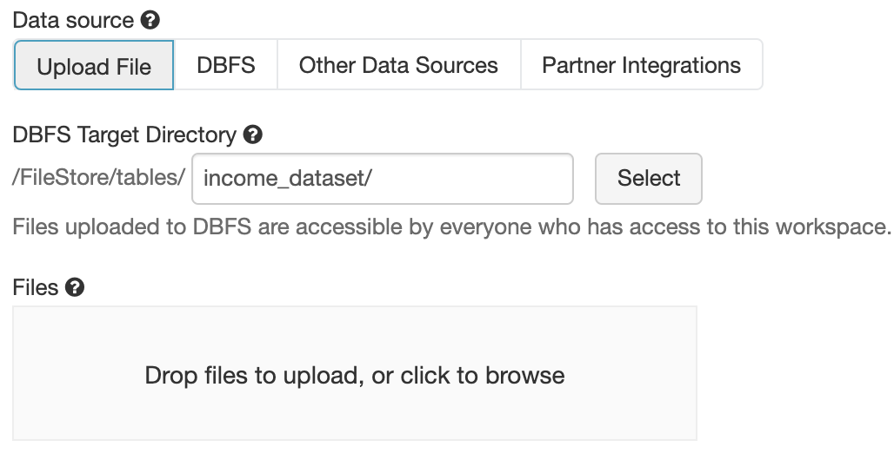
- Launch the Azure Databricks workspace.
- Enter the data menu.
- Upload files by dragging files onto the marked area or click on it to upload using the file browser.
For more detailed instructions, see the Databricks documentation.
Copying files to DBFS using the CLI
- Install
databricks-cliinto a local Python environment by runningpip install databricks-cli. - Generate a personal access token for your Databricks workspace by going to Settings > User Settings > Generate new token. For details, see the Databricks documentation.
- Configure the CLI to access your workspace by running
databricks configure --token. - Enter the URL of the databricks host (the domain of your workspace,
usually of the pattern
https://<UNIQUE ID OF YOUR WORKSPACE>.azuredatabricks.net/) and the token when prompted for it. - To verify the configuration, run
databricks fs lsand check whether you are able to see the files stored on DBFS. - Then copy the files using the
dbfs cpcommand:
For example:
dbfs cp anovos/config/configs_income_azure.yaml dbfs:/FileStore/tables/configs_income_azure.yaml
dbfs cp anovos/data/metric_dictionary.csv dbfs:/FileStore/tables/metric_dictionary.csv
dbfs cp -r anovos/examples/data/income_dataset dbfs:/FileStore/tables/income_dataset
For more information on the Databricks CLI, see the Databricks documentation.
Step 1.3: Create a workflow script
To launch the workflow on Azure Databricks, we need a single Python script as the entry point.
Hence, we'll create a main.py script that invokes the Anovos' workflow runner:
Upload this script to DBFS as well using either of the methods described above.
Again, you can place this file at a location of your choosing.
In this tutorial, we have placed it at dbfs:/FileStore/tables/scripts/main.py.
Step 1.4: Configure and launch an Anovos workflow as a Databricks job
There are several types of jobs available on the Azure Databricks platform. For Anovos, the following job types are suitable choices:
-
"Python:" The job runs from a single Python script. Anovos and the required Scala dependencies are installed through the respective package repositories.
-
"Spark Submit:" The job is invoked through a bare
spark-submitcall. The installation of Anovos is handled by a cluster initialization script and the required Scala dependencies have to be provided as JAR files through DBFS.
Note that there are several limitations for "Spark Submit" tasks: You can only run them on new clusters and autoscaling is not available. For more information, see the Databricks documentation on jobs.
Unless you require the fine-grained control that this option offers with regard to
cluster initialization and spark-submit options, we recommend to select "Python" as the
job type.
1.4.1: Using the "Python" job type
Once all files have been copied to DBFS, we can create an Azure Databricks job that starts a cluster and launches the Anovos workflow.
Here's an example of a job configuration: 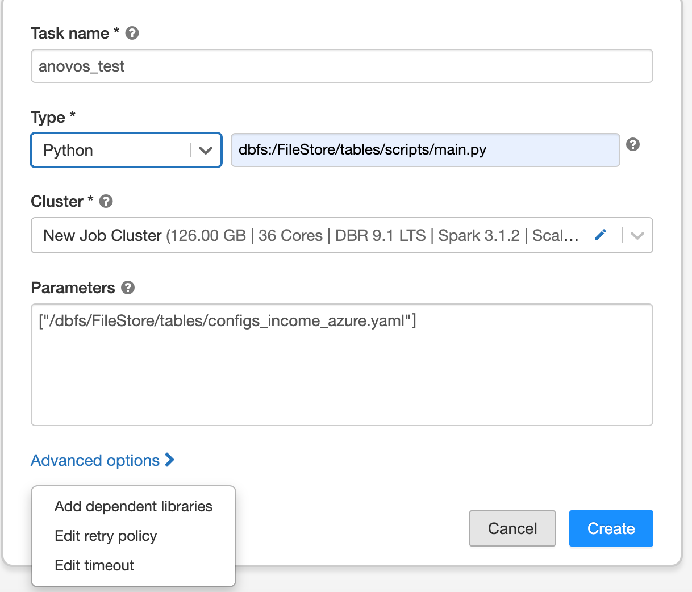
You can see that we set the "Type" to "Python" and have provided the path of the main.py script.
In the parameters section, we pass the DBFS path of the config file.
The cluster configuration comprises settings for the Databricks Runtime, the number of workers, worker and driver types, as well as the cluster's scaling behavior.
Here's an example of a cluster configuration for this tutorials: 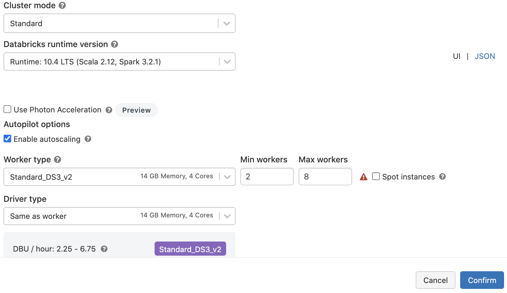
For more detailed information, refer to the Databricks documentation.
To give the Databricks platform access to Anovos, click on "Advanced options" and select "Add dependent libraries" in the Job Configuration Window.
If you chose the default way of obtaining Anovos directly from the Python Package Index,
select "PyPI" as the "Library Source" and enter anovos as the "Package":
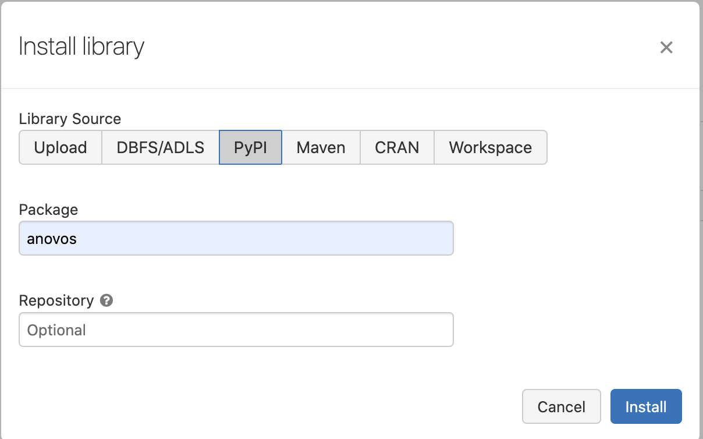
💡 In case you encounter the error "ImportError: cannot import name 'soft_unicode' from 'markupsafe'"
while running the job, then you need to add markupsafe==2.0.1 as another dependency from PyPI.
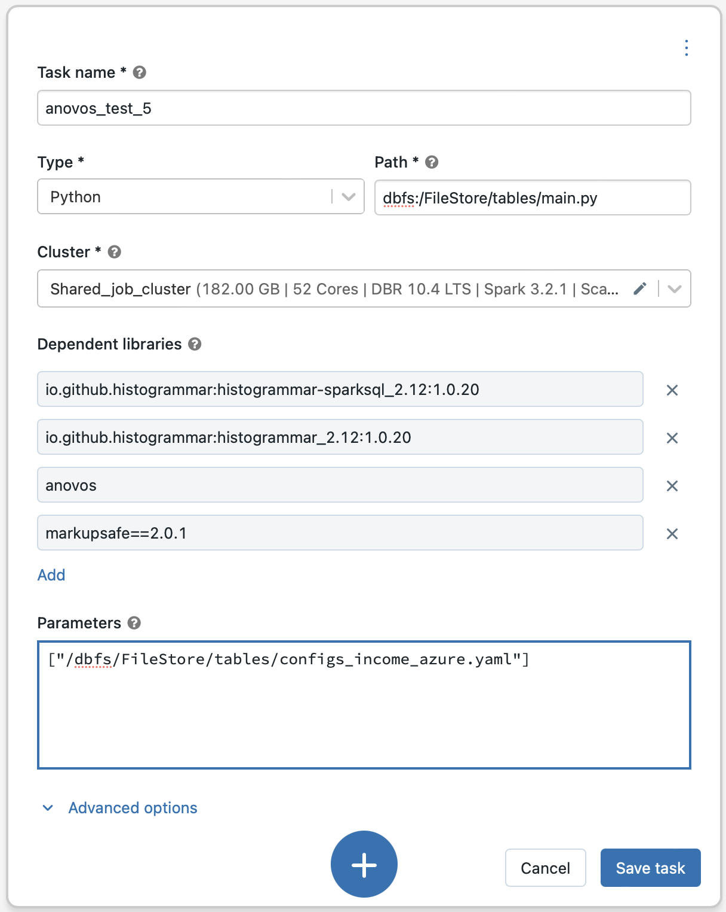
If you chose to provide your own wheel file, select "Upload" as the library source and follow the instructions.
In addition to the Anovos wheel file, we need to provide the histogrammar package to Azure Databricks.
Anovos uses this library internally to compute correlation matrices.
Following the same procedure as for Anovos, you can add histogrammar as a dependent library.
This time, we use "Maven" as the "Library Source".
Then, select io.github.histogrammar:histogrammar-sparksql_2.12:1.0.20
and io.github.histogrammar:histogrammar_2.12:1.0.20 as the "Coordinates"
(copy the coordinate one by one, paste in Coordinates box and then add it by clicking on Install button):
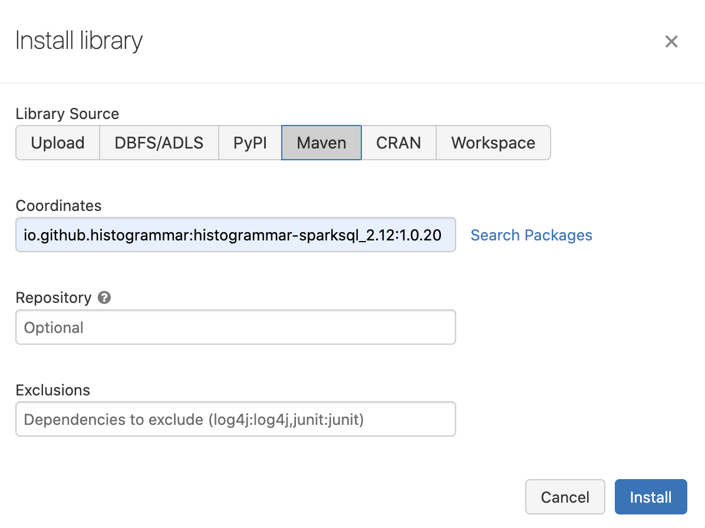
(In case you're running Anovos on Spark 2.4.x, you need to add
io.github.histogrammar:histogrammar-sparksql_2.11:1.0.20 and io.github.histogrammar:histogrammar_2.11:1.0.20)
Once the job is configured, click "Create" to instantiate it. Then, you'll see the full task configuration: 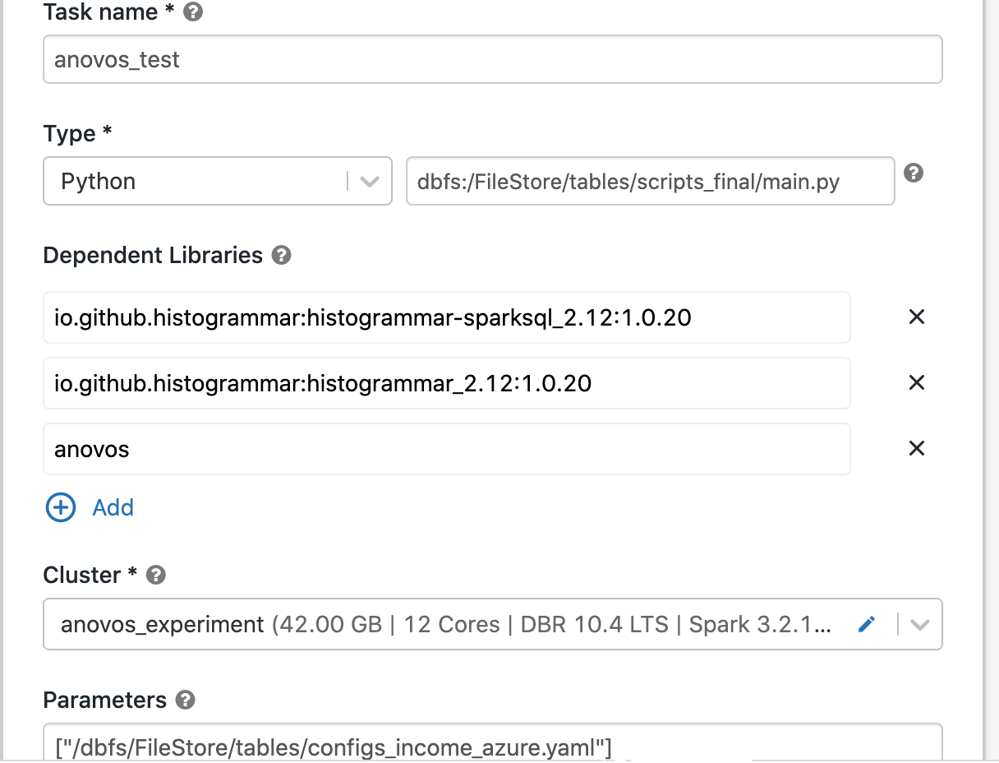
On the subsequent screen, click on "Run now" to launch the job: 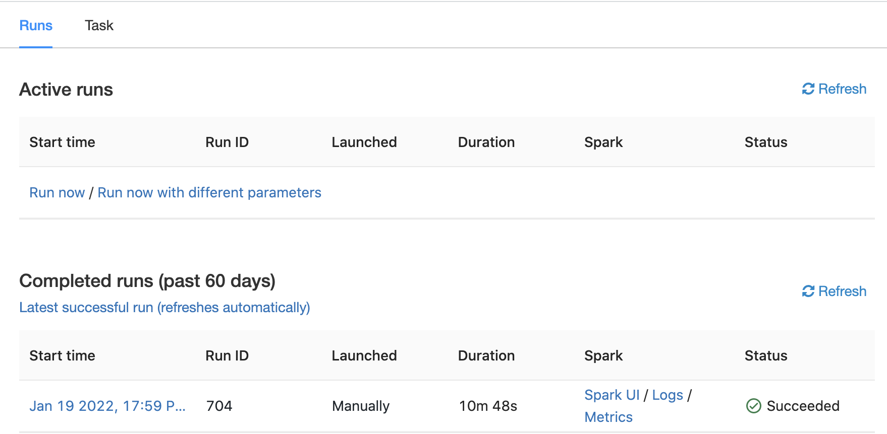
For more information on creating and maintaining jobs, see the Databricks documentation.
1.4.2: Using the "Spark Submit" job type
Anovos internally uses the histogrammar library to compute correlation matrices.
Hence, we need to provide the package to Azure Databricks.
As the "Spark Submit" job type requires any dependency to be available through DBFS,
you first need to upload the histogrammar JAR files to DBFS.
If you're using Spark 3.x, download the following files and upload them to DBFS:
io.github.histogrammar.histogrammar_2.12-1.0.20.jario.github.histogrammar.histogrammar-sparksql_2.12-1.0.20.jar
If you're using Spark 2.x, download the following files and upload them to DBFS:
io.github.histogrammar.histogrammar_2.11-1.0.20.jario.github.histogrammar.histogrammar-sparksql_2.11-1.0.20.jar
Once these files have been uploaded to DBFS, we can create an Azure Databricks job that starts a cluster and launches the Anovos workflow.
Here's an example of a job configuration: 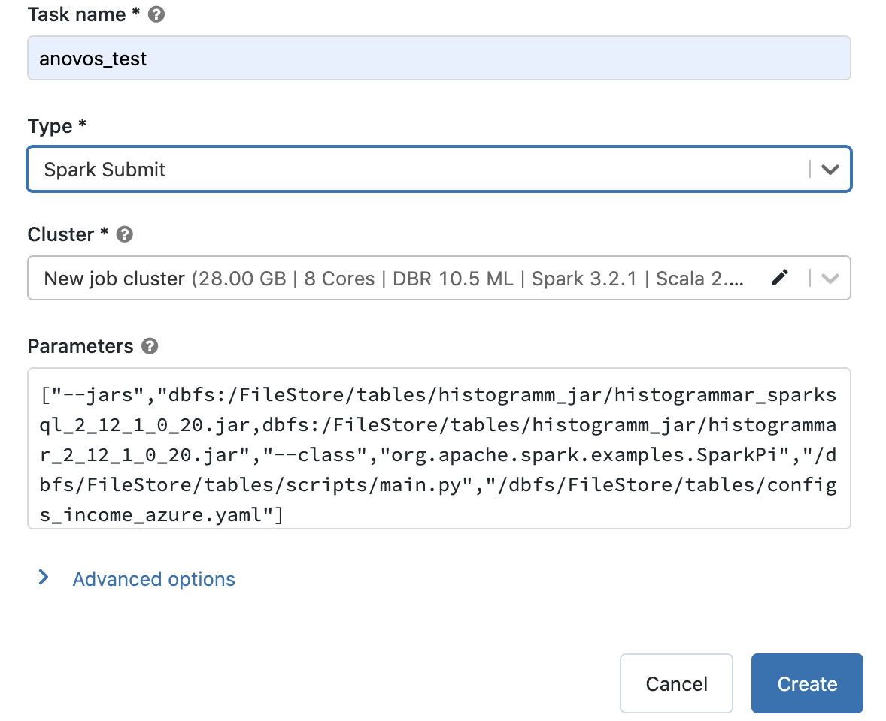
You can see that we set the "Type" to "Spark Submit".
In the parameters section, we pass the DBFS paths of the histogrammar JAR files, the sample class,
the main.py script, and configuration file.
For example:
["--jars","dbfs:/FileStore/tables/histogramm_jar/histogrammar_sparksql_2_12_1_0_20.jar,dbfs:/FileStore/tables/histogramm_jar/histogrammar_2_12_1_0_20.jar","--class","org.apache.spark.examples.SparkPi","/dbfs/FileStore/tables/scripts/main.py","/dbfs/FileStore/tables/configs_income_azure.yaml"]
The cluster configuration comprises settings for the Databricks Runtime, the number of workers, worker and driver types. (Note that autoscaling is not available for "Spark Submit" jobs on Azure Databricks.)
Here's an example of a cluster configuration for this tutorial: 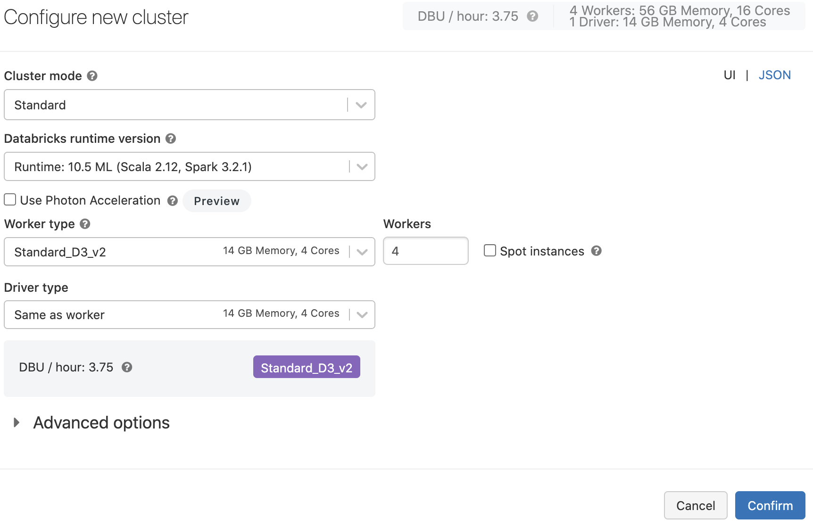
For more detailed information, refer to the Databricks documentation.
To give the Databricks platform access to Anovos, you need to create a shell script that is executed upon cluster initialization and fetches the package from PyPI.
The anovos_packages.sh script contains just one line:
Note that you should specify the version of Anovos if you're running production workloads to ensure reproducibility:
Place this script on DBFS as well.
During cluster configuration, click on "Advanced options" and specify the path to the script in the "Init Script" section:
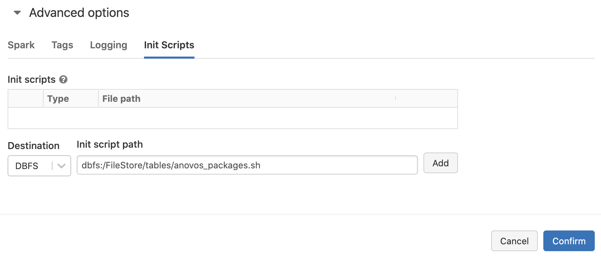
To enable logging, configure a DBFS path in the "Log" section:

Once the job is configured, click "Create" to instantiate it.
On the subsequent screen, click on "Run now" to launch the job:
For more information on creating and maintaining jobs, see the Azure Databricks documentation.
Step 1.5: Retrieve the output
Once the job finishes successfully, it will show up under "Completed runs".
The intermediate data and the report data are saved at the master_path and the final_report_path
specified in the configs_income_azure.yaml file.
In this tutorial, we have set these paths to dbfs:FileStore/tables/report_stats/.
To retrieve the HTML report and the report data, you can either go to this path in the UI and copy the files, or use the CLI to copy everything to your local machine:
For more details regarding accessing files on DBFS, see the instructions on uploading files to DBFS in Step 2.
2. Anovos on Azure Databricks Using an Azure Blob Storage Container Mounted to DBFS
Step 2.1: Installing/Downloading Anovos
This step is identical to Step 1.1: Installing Anovos on Azure Databricks.
Step 2.2: Copy the dataset to an Azure Blob Storage container
To run an Anovos workflow, the dataset needs to be stored on an Azure Blob Storage container. You can either use the UI by clicking the upload button or the CLI to copy files from your local machine to an Azure Blob Storage container. For detailed instructions, see the respective subsections below.
In this tutorial, we will use the "income dataset" provided with Anovos and an accompanying pre-defined workflow. You can obtain these files by cloning the Anovos GitHub repository:
Afterwards, you'll find the dataset under examples/data/income_dataset
💡 Note that you need to use the dataset version and workflow configuration files from the same _Anovos version_
that you have set up in Step 2.1.
Sometimes the version on PyPI that you obtain when running pip install anovos version is older than the latest
development version on GitHub.
The syntax to upload a file using the command line are as follows:
To learn more about transferring data to Azure Blob Storage containers, please refer to the Azure documentation.
Step 2.3: Mount an Azure Blob Storage Container as a DBFS path in Azure Databricks
To access files in an Azure Blob Storage container for running Anovos in Azure Databricks platform, you need to mount that container in the DBFS path.
To mount the Azure Blob Storage container, execute the following commands in an Azure Databricks notebook:
dbutils.fs.mount(
source = "wasbs://<container-name>@<storage-account-name>.blob.core.windows.net",
mount_point = "/mnt/<mount-name>",
extra_configs = {"fs.azure.sas.<container-name>.<storage-account-name>.blob.core.windows.net":"<sas-token>"})
Here,
- <storage-account-name> is the name of your Azure Blob Storage account
- <container-name> is the name of a container in your Azure Blob Storage account
- <mount-name> is the DBFS path where the Blob Storage container or a folder inside the container will be mounted to
- <sas_token> is the SAS token for that storage account
To learn more about mounting Azure Blob Storage containers in DBFS, please refer to the Azure Blob Storage documentation.
💡 Note that you only need to mount the container once.
The container will remain mounted at the given mount point.
To unmount a container, you can run dbutils.fs.unmount("/mnt/<mount-name>") in an Azure Databricks notebook.
Step 2.4: Update the workflow configuration for all input and output paths according to the DBFS mount point
Once mounting is completed, the data is present in DBFS at the path specified as the mount point. All operations performed by Anovos when running a workflow will result in changes in the data stored in the Azure Blob Storage container.
The example configuration file we use in this tutorial can be found at config/configs_income_azure_blob_mount.yaml
in the Anovos repository.
It will need to be updated to reflect the path of the mount point set above.
In order for Anovos to be able to find the input data and write the output to the correct location, update all paths to contain the path of the mount point:
🤓 Example:
Here, the mount points is dbfs:/mnt/anovos1 and the input dataset is stored in a folder called income_dataset/csv
within the Azure Blob Storage container.
To learn more about the Anovos workflow configuration file and specifying paths for input and output data, have a look at the Configuring Workloads page.
Step 2.5: Copy the updated configuration file from the local machine to the Azure Blob Storage container
Once you have updated the configuration file, copy it to Azure Databricks using the same command that was used in Step 2.2.
Remaining Steps
The remaining steps are the same as above, so please continue with Step 1.4